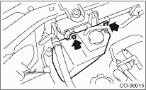

COOLING(H4SO) > Reservoir Tank
REMOVAL
1. Disconnect the over flow hose that is connected to the radiator filler neck.
2. Remove the bolts which install reservoir tank onto radiator main fan shroud.
3. Remove the reservoir tank.
